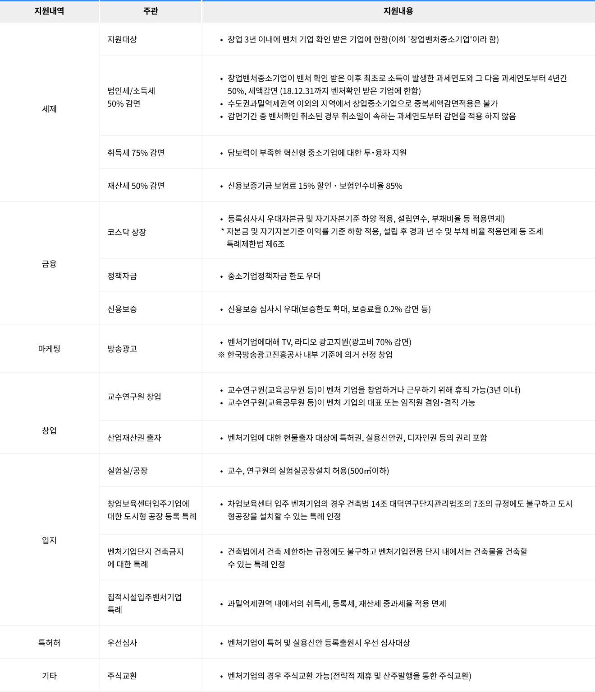

벤처인증
벤처기업 (Venture Company)
벤처기업은 벤처(Venture)와 기업(Company)의 합성어로서 벤처는 모험적 사업, 금전상의 위험을 무르쓴 행위를 뜻하고 기업은 영리를 목적으로 생산요소를 종합하여
계속적으로 경영하는 강제적 사업이란 의미를 내포하고 있습니다.벤처기업의 정의는 학술적으로 명확히 정리된 개념은 없으며 국가에 따라 정책대상으로 다양하게 사용되고 있습니다. 원래 미국에서는 다른 기업보다 상대적으로
사업의 위험성은 높으나 성공하면 높은 수익이 보장되는 기업으로, 일반적으로 Ventur Capital로부터 투자를 받은 기업을 의미하지만, 다른 나라에서는
신사업 기술집약기업첨단기술기업 등 을 의미하는 다른 개념으로 사용하고 있습니다.
우리나라에서의 벤처기업 개념
다른 기업에 비해 기술성이나 성장성이 상대적으로 높아, 정부에서 지원할 필요가 있다고 인정하는 기업으로서, '벤처기업육성에관한특별조치법'의 3가지
기준 중 1가지를 만족하는 기업을 의미합니다.우리나라의 벤처기업은 성공한 결과로서의 기업이라기보다는 세계적인 일류기업으로 육성하기 위한 지원대상으로서의 기업이라는 성격이 강하다고 볼 수 있습니다.
벤처기업 (Venture Company)
